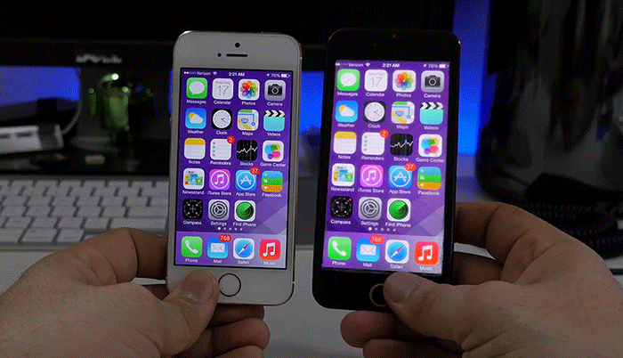

Iphone 6
Predstavljanje novih modela
Novi iPhone predstavljen je pre nepune dve nedelje, odnosno 19. septembra. Ovaj događaj je podigao mnogo prašine na društvenim mrežama, delom zbog samih telefona a delom i zbog “skandala” koji su usledili nakon predstavljanja.
Apple je prvi put napravio značajnije izmene u svojoj ponudi. Pre svega, odlučili su se na radikalnije povećanje ekrana, i to sa dva modela koji će se prodavati uporedo: iPhone 6 i iPhone 6 Plus.
Razlika između dva modela je suštinski u veličini ekrana (4.7 naspram 5.5 inča), rezoluciji samog displeja, veličini baterije i nešto boljoj kameri, naravno u korist većeg modela. Ovim izmenama iPhone, posle duže vremena, može da stane ravnopravno uz konkurenciju kada je veličina ekrana u pitanju.
Medijski skandali
Prvi utisci sa portala koji su najbrže došli u posed telefona bili su pozitivni, međutim, Apple je ubrzo napravio nedopustivu grešku. Novi softver iOS 8 je sa sobom doneo manji broj grešaka, koje je brzi update na 8.0.1 verziju trebalo da reši. Međutim, korisnike koji su među prvima izvršili update su zatekli telefoni koji više nisu funkcionalni (nemogućnost pozivanja i korišćenja Touch ID senzora). Iako je grešku bilo moguće ispraviti reinstalacijom softvera, mnogi se u tome nisu snašli a Apple-u je trebalo nekoliko dana da objavi update 8.0.2.
Drugi, uslovno rečeno, skandal koji je usledio bile su optužbe na račun kućišta većeg modela, iPhone 6 Plus. Snimak koji se pojavio i brzo sakupio više od 45 miliona pregleda pokazuje da novi iPhone, navodno, ima veliku grešku u samoj konstrukciji, odnosno da se lako savija.
